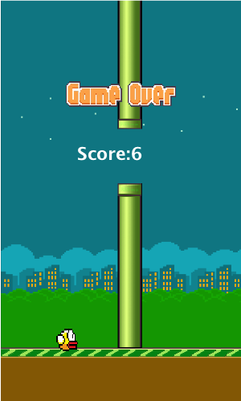
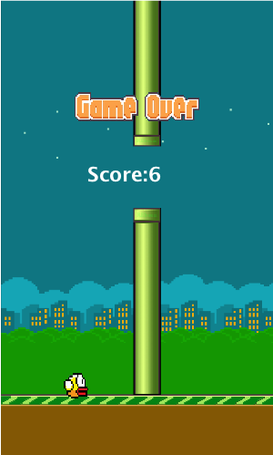

Flappy Bird
For my ENGR105 final project, I created a version of flappy bird in MATLAB. I focused on making a game that looked really similar to the original flappy bird. This wasn't particularly easy as MATLAB isn't really built for those sort of products. Collision detection worked from the transparency data of the image I used and the game is easily editable for different computer speeds. I was really pleased with the final game and have yet to score higher than seven.
 
